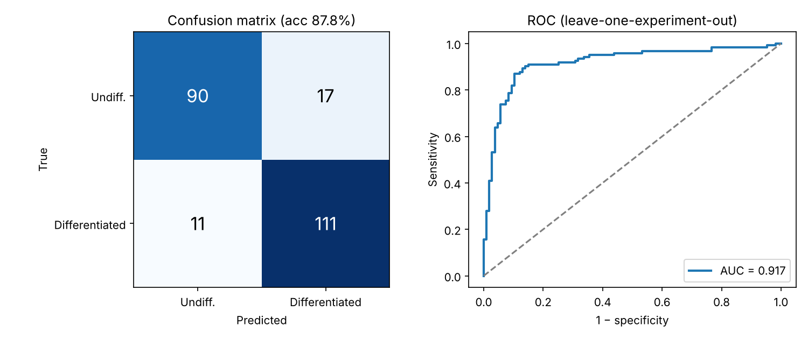

Click or drop an image here
.tif .tiff .png .jpg
.tif .tiff .png .jpg
Or try an example:
Loading model (~85 MB, first visit only)…
Click or drop many images here
About this model
- Task: differentiated vs undifferentiated cells from phase-contrast images.
- Training data: 229 open images of SH-SY5Y cells, retinoic-acid-differentiated (n=122) vs untreated controls (n=107), from 4 independent experiments (Yordanov & Hristiva, Zenodo 19634700, CC-BY 4.0).
- Method: each image is split into 512-px tiles; a frozen DINOv2 ViT-S/14 turns each tile into an embedding; logistic regression scores each tile; the image score is the mean of its tile scores.
- Validation (leave-one-experiment-out): accuracy 87.8% (95% CI 83–92%), AUC 0.92, sensitivity 91%, specificity 84%.
- Limits: pilot trained on one cell line, one microscope, ~10× phase contrast. Retrain on your own images (e.g. MSC vs fibroblast) before research use. Not for clinical use.
